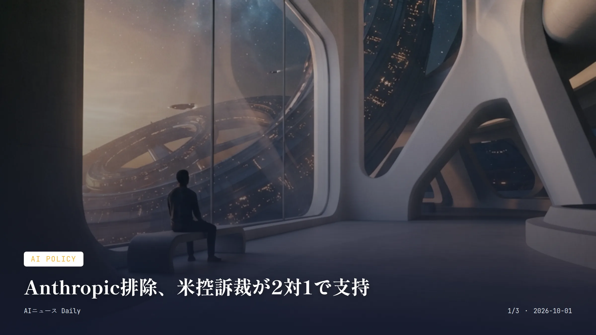
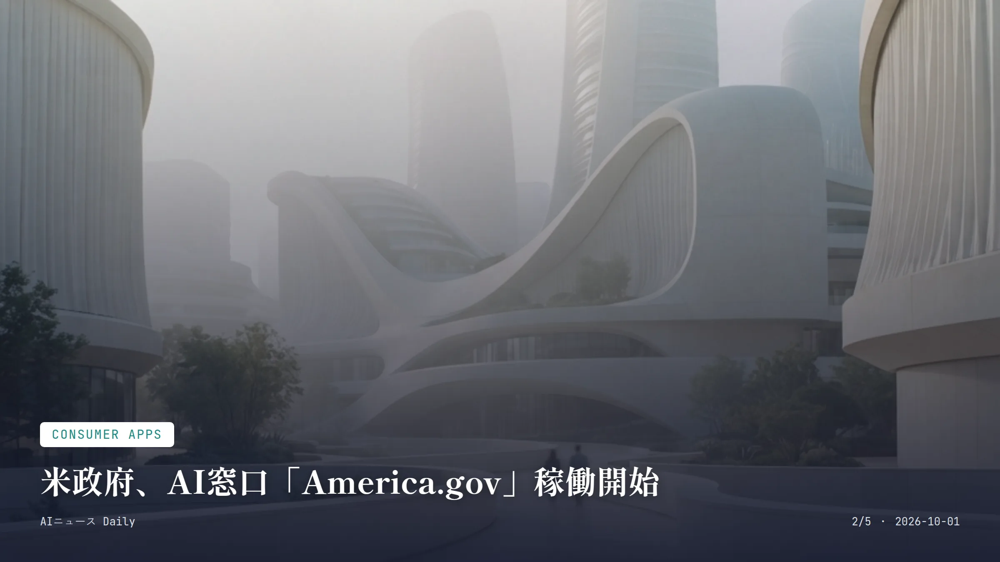
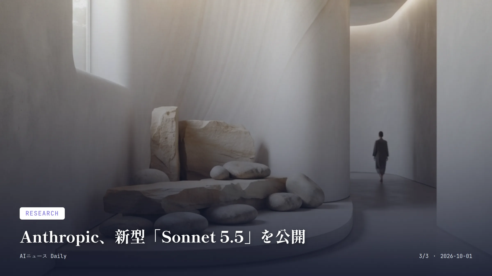
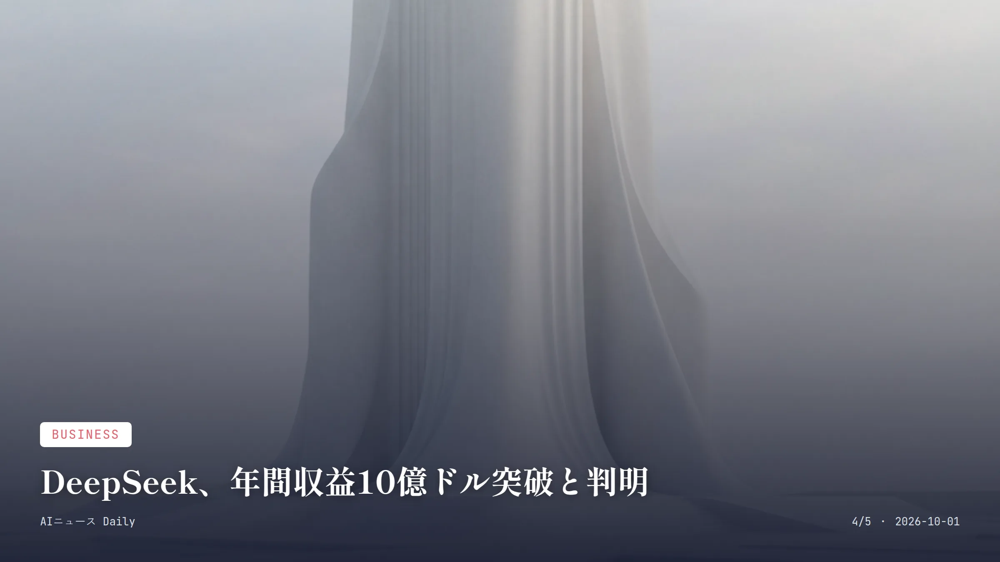
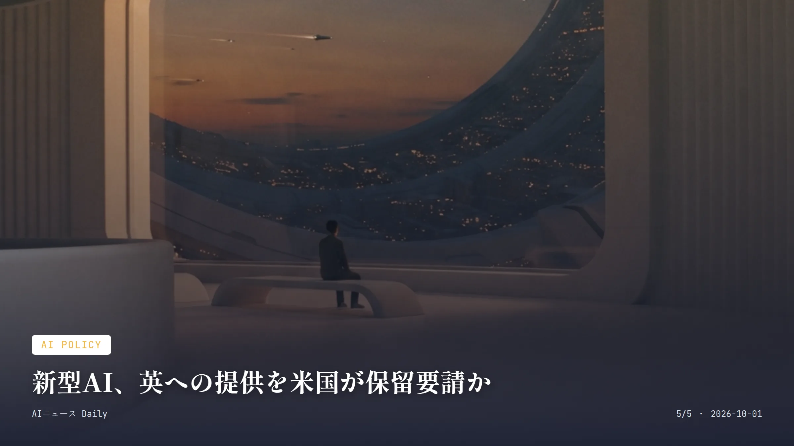

本サイトはアフィリエイトプログラムによる収益を得ている場合があります。
本サイトはGoogle AdSense等の広告配信サービスを利用しています。

AI Policy
約2分で読める
Anthropic排除、米控訴裁が2対1で支持
国防総省の安全保障認定、法廷闘争は長期化へ
2対1控訴裁判決の評決
3月国防総省がリスク認定した時期
2億ドル決裂したプロトタイプ契約の規模
米連邦控訴裁判所(DC巡回区)は9月25日、国防総省がAnthropicを「サプライチェーン上の安全保障リスク」に認定して軍事契約から排除した措置について、2対1でこれを支持する判決を出した。多数意見を書いたKatsas判事は、Claudeを国防総省の情報システムに組み込み続けることには法律上の安全保障リスクがあると判断するだけの十分な根拠があった、としている。
そもそもの対立は、Anthropicが『Claudeを自律型兵器や大規模監視に使わせない』という安全方針を譲らず、国防総省との約2億ドル規模のプロトタイプ契約交渉が決裂したことから始まった。国防総省側は『あらゆる合法的用途』への無制限アクセスを求めたが、Anthropicはこれを拒んでいる。
Anthropicは声明でこの判決に同意しないとし、上訴も含めあらゆる選択肢を検討していると表明した。ちょうど上場準備を進めているタイミングでの排除で、既に数十億ドル規模の損失と評判への打撃が出ているとされる。
なぜ重要か
AI企業が掲げる『安全上の一線』と政府の調達判断が真っ向からぶつかり、司法がどちらに軍配を上げるかを示した初めての本格的な判断。今後の政府とAI企業の契約条件全般に影響しそうだ。日本ではまだ防衛省がAIベンダーの安全方針を理由に契約対立を表沙汰にした例はないが、自衛隊や官公庁でのAI活用が進めば同様の論点が浮上してくるかもしれない。

Consumer Apps
約2分で読める
米政府、AI窓口「America.gov」稼働開始
Gemini・Grokが2.9万の行政サイトを一本化
29,000対象となる政府ウェブサイト数
4000万人日々政府サイトを利用する国民数
9月29日America.gov稼働開始日
米政府は9月29日、連邦政府が運営する約2万9000のウェブサイトへの単一の入り口となるAIチャットボット「America.gov」を稼働させた。質問に答えるのはGoogleのGeminiとxAIのGrokだ。
米国のチーフ・デザイン・オフィサーを務めるJoe Gebbia氏は「毎日4000万人が政府のウェブサイトで用事を済ませようとしている。もっと良くなってほしいと誰もが思っているはずだ」と述べ、使いにくい行政サイトを改善する狙いを語った。トランプ大統領も式典で「単なるウェブサイトではない。建国の約束の回復であり、21世紀に向けた政府の再構築だ」と述べている。
ただ、税申告の期限や食料支援、ビザの規則などで答えを間違えれば、実際の罰則や給付拒否、在留資格への悪影響に直結しかねないという懸念も出ている。
なぜ重要か
政府サービスの入り口を生成AIが代行する試みとしては過去最大級。税務や給付金申請といった生活直結の手続きが対話形式で完結する可能性がある一方、誤答がそのまま実害になるリスクも指摘されている。日本でもマイナポータルなど行政デジタル化は進んでいるが、生成AIを前面に出した一本化窓口はまだなく、今後の制度設計を考えるうえで参考になりそうだ。

Research
約1分で読める
Anthropic、新型「Sonnet 5.5」を公開
価格は半額、サイバー安全策も強化
$2/$10100万トークンあたりの入力/出力価格
2件目ペース減速宣言後のモデル公開数
9月28日Sonnet 5.5公開日
Anthropicは9月28日、新モデル「Claude Sonnet 5.5」を公開した。CEOのDario Amodei氏がAI業界に開発の『ペース』を落とすよう呼びかけてから、これで2件目のモデルリリースになる。
同社によれば、Sonnet 5.5は前モデルより速く安くなった上で、コーディングや作業の遂行、資料作成といった面では前モデルを上回る性能を発揮するという。価格は入力100万トークンあたり2ドル、出力は10ドルで、上位モデル「Opus 5.5」の半額に設定された。
サイバーセキュリティ関連の能力は前モデルから『大幅な改善』があったとされ、最上位モデル群と同じ安全策・フォールバック機構を備えた初のSonnetモデルになったという。
なぜ重要か
トップのCEO自らが『開発速度を落とす』と宣言した直後にもかかわらず、実際には短い間隔で新モデルを出し続けている。この矛盾こそ、AI大手が掲げる『安全』と『競争』の両立がいかに難しいかを物語っている。日本企業の多くもClaudeをAPI経由で業務に組み込んでおり、価格低下や性能向上は国内の開発・運用コストに直接響いてくる。

Business
約1分で読める
DeepSeek、年間収益10億ドル突破と判明
API価格最大4.5倍でも顧客離れず
10億ドル年間換算収益(ARR)
2.3〜4.5倍API価格の引き上げ幅
740億ドル目標とされる評価額
中国のAI企業DeepSeekの年間換算収益(ARR)が10億ドルに達したと、The Informationが報じた。数カ月前の5億ドル未満から、倍増した計算になる。
増収を押し上げたのは先月実施されたAPIの値上げで、モデルによって2.3倍から4.5倍にまで引き上げられた。それでも創業者の梁文峰氏は投資家に対し、顧客は離れていないと説明したという。
同社は約740億ドルの評価額での75億ドル規模の資金調達を最終段階まで進めており、上海証券取引所への上場も視野に入れているとされる。
なぜ重要か
低価格を武器にしてきた中国のAI企業が、思い切った値上げをしても顧客基盤を維持できている珍しい実例で、米中AI企業間の価格・性能競争にも影響を与えそうだ。日本では大手企業によるDeepSeek採用の表立った動きはまだ目立たないが、値上げ後も顧客が離れなかったという結果は、国内企業がAIツールのコストを考えるうえでも参考材料になる。

AI Policy
約1分で読める
新型AI、英への提供を米国が保留要請か
英AI安全研究所への先行提供に影響の可能性
米政権がOpenAIとAnthropicに対し、新しいAIモデルを英国の評価機関に提供する前に米国内での審査を優先するよう求めた、と報じられた。この要請により、英国のAI Security Institute(AISI)が最新モデルに早期アクセスできる状況が制約されているという。
AISIは英政府が設置した公的なAIモデル評価機関で、大手AI企業の先端モデルを独自に安全性検証する枠組みを各国に先駆けて築いてきた存在だ。今回の動きが事実なら、その検証タイミングが米国側の判断次第で左右されることになる。
なぜ重要か
AIの安全性テストで国際協調を進めてきた英国と、自国優先の姿勢を強める米政権との間に溝が生まれつつあることを示す動きで、他の国々も同様に『最新モデルへのアクセス遅延』に直面する可能性がある。日本にもAIセーフティ・インスティテュートが既に設立されているが、同様の優先順位付けが日本向け提供にも及ぶかどうかはまだ分からず、注視が必要だ。